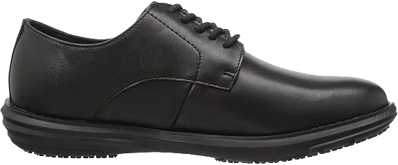
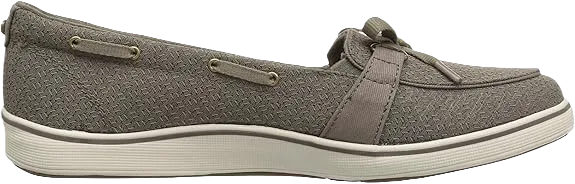
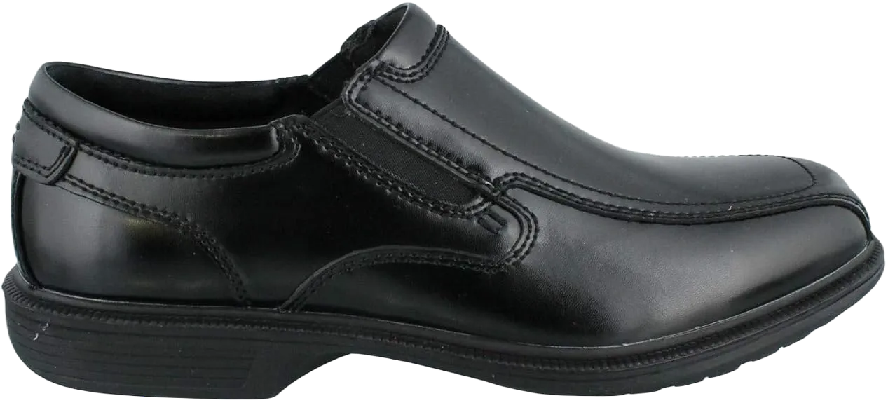
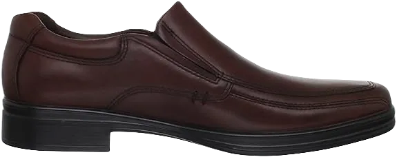

10 Best Shoes for Standing Long Periods of Time 2024
Certainly! Choosing the best shoes for standing long periods of time isn't as simple as it seems, especially when it's a job requirement you can't avoid. Many professions, such as working in the operating theater, hairdressing, hotel service, or a warehouse, require standing for extended periods—much longer than a regular person would. This prolonged standing can lead to foot pain, discomfort, and even numbness.
However, you can be a smart shoe wearer by carefully selecting the best shoes for long-standing hours. The market is filled with footwear that tempts you to purchase them with chic designs and top-notch brands aiming to capture your attention. But the key is to focus on shoes specifically designed for all-day comfort, providing support to your joints and made from high-quality materials. Below, we've highlighted some in-demand shoes that deserve a spot on your hit list!
-
#1
Rockport Cobb Hill Women’s Petra Flat
.webp)
Transform your standing job into a relaxing and pain-free experience with this shoe by Rockport. Designed with both style and comfort in mind, this professional shoe offers substantial padding for enhanced comfort. Its adaptive fit and excellent traction allow you to walk as if you're gliding with ease. The high-quality leather and shock-resistant liners ensure every step is cushioned, adding to your overall comfort throughout the day.
Additionally, the adjustable straps with a hook-and-loop closure provide a snug fit, making walking more comfortable. The EVA footbed offers excellent support, absorbing impact and minimizing the effects of jerks and sudden movements. This ensures your feet remain protected from harsh footfalls, making energetic movements less strenuous on your feet.
The open design, combined with lightweight materials, allows you to wear these shoes for extended periods without causing foot numbness. With a 1mm drop in the heel, the shoe supports ergonomic walking, and the wide toe box is perfect for those with broader feet, ensuring a comfortable fit during brisk walking sessions. -
#2
Clarks Women’s Cloud Steppers Sillian
.webp)
Next up is the Clarks Women’s Cloud Steppers Sillian Paz Slip-On Loafer, known for being one of the most comfortable shoes for long hours of standing. The slip-on design allows for easy and quick wear with just a simple slide motion. Its thick upper material keeps your feet snug and warm during colder months, and its casual yet professional look makes it ideal for the workplace.
The soft textile uppers offer gentle comfort, while the Ortholite footbed is designed to provide maximum ease for your feet. The EVA outsole efficiently absorbs shock and jerks, making it a great option even for running or high-impact movements. The fabric lining adds to the overall comfort, ensuring a soft and pleasant feel with every wear.
With a removable cushion system, this shoe prioritizes foot health and support, giving you an adjustable level of comfort. After experiencing the comfort and durability of this design, you may find yourself becoming a regular buyer of this brand. -
#3
KEEN Men’s Austin
.webp)
This Keen men's shoe is designed for all-day comfort and a relaxing feel, making it a perfect choice for those long days. Its appealing design fits well in a workplace environment, offering both style and practicality. With a 100% waterproof build and an imported rubber sole, this shoe ensures durability. The breathable leather adds to the comfort, especially when standing for extended periods, while the noticeable toe protection enhances safety and support.
The removable footbed is ideal for those who prefer using Ortholite insoles or need to replace the insole occasionally for continued softness and security. The lace-up design, combined with high-quality materials, ensures a snug fit, while proper arch support makes it a great option for night shift workers. The shoe is also well-ventilated, and the midsole is treated with EVA for added comfort and ease in walking.
Additionally, the shoe's quality ensures shock absorption, even when stepping on sharp or pointy objects like bricks, giving you a cloud-like walking experience. The anti-odor feature addresses concerns about bad smells caused by extended wear, and its lightweight yet durable construction allows for safe, quick movement without the risk of slipping on wet surfaces. -
#4
Scholl’s Men’s Hiro Work Shoe
No more weariness from standing for hours—Dr. Scholl’s shoe offers the comfort you need. The lace-up design and sleek all-black appearance make it a modern, stylish choice. The cushioning inside provides a soft and supportive touch to your feet, ensuring long-lasting comfort. Plus, its professional design makes it perfect for the office. The non-marking sole delivers excellent traction, while the leather construction is of industrial-grade quality, offering durability without causing foot discomfort.
The perfect fit, combined with Dri-Lex moisture-wicking lining, makes this shoe friendly for extended wear. You’ll experience no suffocation, thanks to the breathable leather uppers that ensure air circulation. Additionally, the antimicrobial sock liners prevent the buildup of germs, keeping your feet fresh and clean throughout the day. This shoe's design takes care of both comfort and hygiene, making it an ideal choice for long workdays.
Featuring Memory Foam Cool Fit and an anti-compression insole, it minimizes stress on your joints, perfect for heavy-duty work. The slip-resistant and oil-resistant sole offers carefree use on a variety of surfaces, including wet or oily grounds, reducing the risk of slips. Whether you're walking on challenging terrain or working in tough conditions, this shoe provides the safety and comfort you need. -
#5
Skechers Women’s Ghenter Bronaugh
.webp)
Footwear by Skechers is highly regarded, especially by professionals, and its positive reviews have earned it a spot on our list. This shoe offers exceptional traction on all types of surfaces, including slippery ones. If you’re a chef, for instance, and face an oil spill, the powerful rubber outsole ensures protection from potential injuries. The cushioning is designed to let you relax while wearing the shoe, and its casual yet modern appearance blends style with functionality. The fabric on the upper and exterior enhances breathability, while the durable rubber sole guarantees long-lasting performance.
With its slip-resistant features, this shoe performs well in various environments, providing a reliable grip in all conditions. The high-quality lining and fabric contribute to overall comfort, particularly during short walks or standing periods. The padded collar and tongue, combined with memory foam, speak to the shoe’s superior quality. This thoughtful design not only improves comfort but also helps reduce the impact and shock that can stress the feet and joints.
The wide toe area ensures a snug, comfortable fit, making these shoes suitable for long hours of wear. Whether you’re working in a warehouse, gym, or any other environment requiring maximum traction and comfort, this Skechers shoe offers both protection and support. Its balance of durability, comfort, and safety makes it a go-to choice for demanding workplaces. -
#6
Grasshoppers Women’s Windham
Unlike the other shoes mentioned, this Grasshopper Women flat shoe stands out with its unique slip-on design, which many ladies appreciate, particularly those who spend long hours on their feet. The flat structure promotes a swift walking experience, while the rubber sole provides excellent traction and control. Inside, the shoe features high-quality foot padding that maintains its shape even after extended wear, making it a top choice for many professionals seeking durability and comfort.
In warmer weather, the moisture-wicking liners ensure your feet stay dry and cool, preventing sweat and discomfort. Additionally, these liners help keep the shoe odor-free, which is essential for maintaining foot health. The thoughtful design of this shoe focuses on your comfort throughout the day, making it ideal for long wear.
Moreover, the footbed and comfort liners are removable, allowing you to replace them with different insoles if needed. With memory foam padding, especially in the tongue area, this Grasshopper shoe offers a delightful combination of freedom and comfort, making your shoe-wearing experience enjoyable and supportive throughout your day. -
#7
Nunn Bush Men’s Bleeker St
In the category of the best shoes for standing long periods, the Nunn Bush slip-on for men stands out with its sports-inspired outer sole, providing superior stability compared to other shoes. This sole maximizes stability for running, walking, and maneuvering in various directions, ensuring you stay energetic throughout the day.
The non-marking sole enhances friction, effectively preventing slips, even on sleek and wet tile floors. Its performance in such conditions makes it a reliable choice for those who need to navigate different surfaces with confidence. Additionally, the dual-density outsole minimizes the risk of slipping and tripping, allowing for a smooth walking experience.
The thoughtfully designed rubber sole enables you to glide effortlessly, reducing strain on your feet during long hours of standing. Its bouncy feel provides much-needed comfort, while the lace-less design allows for quick and easy wear. This shoe combines practicality with style, making it an excellent choice for professionals seeking comfort and stability. -
#8
Hush Puppies Men’s Quatro BK
Hush Puppies is a renowned shoe brand, particularly known for its emphasis on comfort and quality. If you haven't experienced their footwear yet, now is the perfect time to give it a try—you won’t be disappointed!
This shoe is made from 100% leather with a synthetic sole, providing both style and durability. Its waterproof features allow you to wear it in rainy conditions, standing water, and damp areas without fear of damage or cracking. Thanks to HP Hydroxy technology, the water-repellent properties enhance durability significantly. The combination of mesh fabric and leather uppers ensures an exceptional wearing experience, addressing any concerns about breathability.
The Strobel construction offers moisture-wicking properties, while the well-padded footbed and collar enhance overall comfort. Every aspect of the interior has been thoughtfully designed with care, ensuring a comfortable fit that supports your feet throughout the day. -
#9
Skechers for Work Women’s 76550
.webp)
This Skechers shoe, designed specifically for women, offers an extra soft and bouncy feel. Its lace-up style allows for a personalized fit, ensuring maximum comfort. The thick rubber sole provides excellent traction on all surfaces, while the low-cut design and SKECHERS Relaxed Fit® technology enhance both practicality and comfort. Wearing this shoe feels natural and supportive, thanks to its quality fabric and cushioning that also contribute to its durability.
The shoe features sleek leather with an all-black appearance, giving it a polished and sophisticated look. Its clean design and contours enable you to wear it with pride and confidence. With exceptional support for your feet, this shoe is ideal for environments like warehouses, providing 100% traction and shock absorption. The midsole is equipped with shock-resistant technology, ensuring your comfort during long hours of wear.
-
#10
BIRKENSTOCK Unisex Boston
.webp)
The BIRKENSTOCK Unisex slip-on clog offers adaptable comfort and an ergonomic design, allowing you to wear it for long periods without feeling stress on your feet. Its flat sole, complemented by softer padding, ensures a comfortable experience throughout the day. The footbed is designed to withstand pressure for up to 10 hours without deforming the clog or compromising its interior. Additionally, the quality of the materials used guarantees that you’ll be wearing high-quality footwear in your workplace.
The synthetic sole provides excellent traction on all surfaces, while the leather and fabric design adds a touch of style. The heel features ample padding and measures approximately ¾ inches, contributing to overall comfort. With a footbed that has squishy cushioning, this clog is highly resilient for continuous standing. The adjustable strap allows you to customize the fit to your preference, ensuring maximum support.